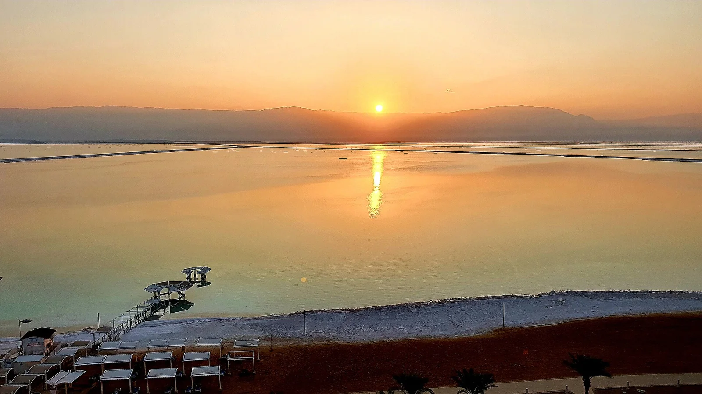

Ein Bokek — Mer Morte
Mer Morte, Israël · baignade

Plages aménagées au bord de la mer Morte, à plus de 400 m sous le niveau de la mer. L’eau, environ dix fois plus salée que l’océan, te fait flotter sans effort.
- Lieu
- Mer Morte, Israël
- Niveau
- Débutant
- Activités
- baignade
- Type d'eau
- lake
- Coordonnées
- 31.20, 35.37 (position approximative du secteur)
Dangers à connaître
- L’eau dans les yeux ou avalée est très irritante, voire dangereuse : sors et rince-toi immédiatement.
- Chaleur extrême en été : bois beaucoup.
- Évite de te baigner avec des coupures ou juste après t’être rasé.
Le conseil d'Ocean Buddy
Flotte sur le dos sans jamais plonger ni mettre la tête sous l’eau, limite-toi à des sessions courtes et rince-toi à l’eau douce en sortant.
Ouvrir dans Ocean Buddy Télécharger sur l'App Store
Source : Fiche Ocean Buddy · septembre 2026 · à vérifier localement.